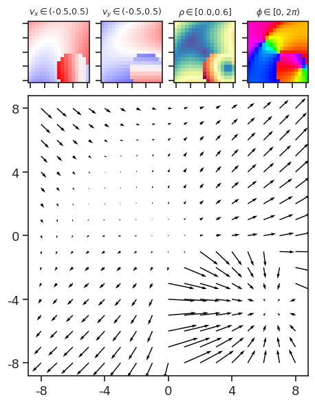

(06) Ablation – ground truth#
Motivation: Lesion bottom-up and top-down pathways.
# HIDE CODE
import os, sys
from IPython.display import display
# tmp & extras dir
git_dir = os.path.join(os.environ['HOME'], 'Dropbox/git')
extras_dir = os.path.join(git_dir, 'jb-MTMST/_extras')
fig_base_dir = os.path.join(git_dir, 'jb-MTMST/figs')
tmp_dir = os.path.join(git_dir, 'jb-MTMST/tmp')
# Code path
sys.path.insert(0, '/home/hadi/Documents/MTMST/code')
from vae.train_vae import TrainerVAE, ConfigTrainVAE
from vae.vae2d import VAE, ConfigVAE
from figures.fighelper import *
from analysis.glm import *
# warnings, tqdm, & style
warnings.filterwarnings('ignore', category=DeprecationWarning)
from rich.jupyter import print
%matplotlib inline
set_style()
def lesion_results(tr: TrainerVAE, args: Iterable[str], dl_name: str = 'tst'):
assert dl_name in ['trn', 'vld', 'tst']
dl = getattr(tr, f"dl_{dl_name}")
if dl is None:
return
if isinstance(args, str):
args = [args]
args = [f"lesion_{a}" for a in args]
cos_lesion = collections.defaultdict(list)
epe_lesion = collections.defaultdict(list)
epe_normd = collections.defaultdict(list)
y_lesion = collections.defaultdict(list)
z_lesion = collections.defaultdict(list)
z_infer = collections.defaultdict(list)
for x, norm in iter(dl):
for s, lesion in lesion_specs.items():
kws = {'x': x, **{a: lesion for a in args}}
latents, _, y, *_ = tr.model.xtract_ftr(**kws)
latents = torch.cat(latents, dim=1).squeeze()
z_lesion[s].append(to_np(latents))
y_lesion[s].append(to_np(y))
latents_infer = tr.model.xtract_ftr(y)[0]
latents_infer = torch.cat(latents_infer, dim=1).squeeze()
z_infer[s].append(to_np(latents_infer))
epe_lesion[s].append(to_np(tr.model.loss_recon(
x, y, w=1 / norm)))
norm_x = torch.sum(torch.linalg.norm(
x, dim=1, keepdims=True,
), dim=[2, 3], keepdims=True)
norm_y = torch.sum(torch.linalg.norm(
x, dim=1, keepdims=True,
), dim=[2, 3], keepdims=True)
epe_normd[s].append(to_np(tr.model.loss_recon(
x / norm_x, y / norm_y)))
d = 1 - torch.mean(F.cosine_similarity(
x, y, dim=1), dim=[1, 2])
cos_lesion[s].append(to_np(d))
output = {
'cos_lesion': _cat_dict(cos_lesion),
'epe_lesion': _cat_dict(epe_lesion),
'epe_normd': _cat_dict(epe_normd),
'y_lesion': _cat_dict(y_lesion),
'z_lesion': _cat_dict(z_lesion),
'z_infer': _cat_dict(z_infer),
}
return output
def _cat_dict(d):
return {
k: np.concatenate(v)
for k, v in d.items()
}
fig_dir = pjoin(fig_base_dir, 'rebuttal_aug')
print(fig_dir)
/home/hadi/Dropbox/git/jb-MTMST/figs/rebuttal_aug
tr = 'fixate1_nf-420_beta-0.15_(2023_04_27,20:20)'
tr = pjoin(results_dir(tr), 'Trainer')
tr = load_model_lite(tr, 'cuda')[0]
z = {
k: tr.forward(k, True)[0]['z']
for k in ['vld', 'tst']
}
epe = tr.forward('tst', True)[1]['epe']
Train true decoder#
grouped_lbl = dict(
Fixation=['fix_x', 'fix_y'],
Self_vel=['slf_v_x', 'slf_v_y', 'slf_v_z'],
Obj_vel=['obj0_v_x', 'obj0_v_y', 'obj0_v_z'],
Obj_pos=['obj0_x', 'obj0_y', 'obj0_z'],
)
g, select_lbl = prep_rofl('fixate1')
print(
{k: v.shape for k, v in g.items()},
select_lbl == list(LBL2TEX),
)
{'trn': (600000, 11), 'vld': (75000, 11), 'tst': (75000, 11)} True
lr_true = sk_linear.LinearRegression().fit(z['vld'], g['vld'])
r2_true = sk_metric.r2_score(
y_true=g['tst'],
y_pred=lr_true.predict(z['tst']),
multioutput='raw_values',
)
msg = f"true r2 mean: {r2_true.mean():0.4f}\n\n"
msg += ', '.join([f"{k}: {v:0.3f}" for k, v in zip(select_lbl, r2_true)])
print(msg)
true r2 mean: 0.8979 fix_x: 0.990, fix_y: 0.991, slf_v_x: 0.990, slf_v_y: 0.961, slf_v_z: 0.996, obj0_x: 0.934, obj0_y: 0.930, obj0_z: 0.847, obj0_v_x: 0.737, obj0_v_y: 0.818, obj0_v_z: 0.683
Lesioned recons/latents#
scales, _ = tr.model.latent_scales()
lesion_specs = {
s: [s == item for item in scales]
for s in np.unique(scales)
}
%%time
df_r2, df_epe, df_cos = [], [], []
for which in ['enc', 'dec', ('enc', 'dec')]:
results = lesion_results(tr, which)
if isinstance(which, tuple):
which = 'both'
for s in [2, 4, 8]:
for z_mode in ['z_lesion', 'z_infer']:
pred = lr_true.predict(results[z_mode][s])
r2 = sk_metric.r2_score(
y_pred=pred,
y_true=g['tst'],
multioutput='raw_values',
)
df_r2.append({
'which': [which] * len(r2),
'scale': [s] * len(r2),
'z_mode': [z_mode] * len(r2),
'factor': select_lbl,
'r2': r2,
})
df_epe.append({
'which': [which] * len(epe),
'scale': [s] * len(epe),
'sample_i': range(len(epe)),
'epe_normd': results['epe_normd'][s],
'epe_lesion': results['epe_lesion'][s],
})
df_cos.append({
'which': [which] * len(epe),
'scale': [s] * len(epe),
'sample_i': range(len(epe)),
'cos_lesion': results['cos_lesion'][s],
})
df_cos = pd.DataFrame(merge_dicts(df_cos))
df_epe = pd.DataFrame(merge_dicts(df_epe))
df_r2 = pd.DataFrame(merge_dicts(df_r2))
CPU times: user 4min 41s, sys: 18.6 s, total: 5min
Wall time: 4min 51s
# compute error
err = np_nans(len(df_r2))
delta = np_nans(len(df_r2))
for i, k in enumerate(select_lbl):
cond = df_r2['factor'] == k
val = df_r2.loc[cond, 'r2']
bsln = r2_true[i]
err[cond] = bsln - val
delta[cond] = 100 * (val - bsln) / bsln
df_r2['err'] = err
df_r2['delta'] = delta
# add grouped labels
group = np.zeros(len(df_r2), dtype=object)
for lbl, v in grouped_lbl.items():
group[df_r2['factor'].isin(v)] = lbl
df_r2.insert(
column='group',
value=group,
loc=4,
)
_df = df_r2.loc[df_r2['z_mode'] == 'z_infer']
fig, axes = create_figure(3, 3, (5, 5), 'all', 'row', layout='constrained')
for i, which in enumerate(_df['which'].unique()):
for j, s in enumerate(_df['scale'].unique()):
ax = axes[i, j]
ax.set_title(f"{which} (s = {s})")
sns.barplot(
data=_df.loc[
(_df['scale'] == s) &
(_df['which'] == which)],
width=0.75,
hue='group',
x='group',
y='err',
palette='Accent',
errorbar=None,
dodge=False,
ax=ax,
)
move_legend(ax)
ax.set(
xlabel='',
ylabel='Error' if j == 0 else '',
)
if i == 2:
ax.tick_params(
axis='x',
rotation=-90,
)
plt.setp(
ax.patches,
linewidth=0.5,
edgecolor='k',
)
ax.grid()
plt.show()
_df = df_r2.loc[df_r2['z_mode'] == 'z_infer']
fig, axes = create_figure(2, 3, (4.2, 3), 'all', 'row', layout='constrained')
for i, which in enumerate(['enc', 'dec']):
for j, s in enumerate(_df['scale'].unique()):
ax = axes[i, j]
ax.set_title(f"{which} ({s} " + r"$\times$" + f"{s} )") # f"{which} (s = {s})")
sns.barplot(
data=_df.loc[
(_df['scale'] == s) &
(_df['which'] == which)],
width=0.75,
hue='group',
x='group',
y='err',
palette='Accent',
errorbar=None,
dodge=False,
ax=ax,
)
move_legend(ax)
ax.set(
xlabel='',
ylabel='Error' if j == 0 else '',
)
if i == 1:
ax.tick_params(
axis='x',
rotation=-90,
labelsize=10,
)
plt.setp(
ax.patches,
linewidth=0.5,
edgecolor='k',
)
ax.grid()
plt.show()
_df = df_r2.loc[df_r2['z_mode'] == 'z_infer']
fig, axes = create_figure(2, 3, (4.2, 3), 'all', 'row', layout='constrained')
for i, which in enumerate(['enc', 'dec']):
for j, s in enumerate(_df['scale'].unique()):
ax = axes[i, j]
ax.set_title(f"{which} ({s} " + r"$\times$" + f" {s})") # f"{which} (s = {s})")
sns.barplot(
data=_df.loc[
(_df['scale'] == s) &
(_df['which'] == which)],
width=0.75,
hue='group',
x='group',
y='err',
palette='Accent',
errorbar=None,
dodge=False,
ax=ax,
)
move_legend(ax)
ax.set(
xlabel='',
ylabel='', # + ' [%]' if j == 0 else '',
)
if i == 1:
ax.tick_params(
axis='x',
rotation=-90,
labelsize=10,
)
if j == 0:
ax.set_ylabel(r'$\delta$')
plt.setp(
ax.patches,
linewidth=0.5,
edgecolor='k',
)
ax.grid()
fig.savefig(pjoin(fig_dir, 'lesion_r2_err.pdf'), bbox_inches='tight')
plt.show()
_df = df_r2.loc[df_r2['z_mode'] == 'z_infer']
fig, axes = create_figure(2, 3, (4.2, 2.9), 'all', 'row', layout='constrained')
for i, which in enumerate(['enc', 'dec']):
for j, s in enumerate(_df['scale'].unique()):
ax = axes[i, j]
ax.set_title(f"{which} ({s} " + r"$\times$" + f" {s})", fontsize=11) # f"{which} (s = {s})")
sns.barplot(
data=_df.loc[
(_df['scale'] == s) &
(_df['which'] == which)],
width=0.75,
hue='group',
x='group',
y='delta',
palette='Accent',
errorbar=None,
dodge=False,
ax=ax,
)
move_legend(ax)
ax.set(
xlabel='',
ylabel='', # + ' [%]' if j == 0 else '',
)
if i == 1:
ax.tick_params(
axis='x',
rotation=-90,
labelsize=10,
)
if j == 0:
ax.tick_params(
axis='y',
labelsize=10,
)
ax.set_ylabel(r'$\delta R^2 \,\, \left[\%\right]$', fontsize=11)
plt.setp(
ax.patches,
linewidth=0.5,
edgecolor='k',
)
ax.grid()
fig.savefig(pjoin(fig_dir, 'lesion_r2_delta.pdf'), bbox_inches='tight')
plt.show()
ax = sns.barplot(data=df_r2, x='scale', y='err', hue='which', palette='Accent')
ax.set_yscale('log')
df_r2.groupby(['z_mode', 'which', 'scale']).mean()
| r2 | err | |||
|---|---|---|---|---|
| z_mode | which | scale | ||
| z_infer | both | 2 | 0.763217 | 0.134658 |
| 4 | 0.851442 | 0.046434 | ||
| 8 | 0.530104 | 0.367771 | ||
| dec | 2 | 0.469327 | 0.428548 | |
| 4 | 0.640828 | 0.257048 | ||
| 8 | -0.759877 | 1.657753 | ||
| enc | 2 | 0.185238 | 0.712637 | |
| 4 | 0.602740 | 0.295136 | ||
| 8 | 0.255480 | 0.642395 | ||
| z_lesion | both | 2 | -0.164200 | 1.062076 |
| 4 | 0.665322 | 0.232554 | ||
| 8 | 0.569220 | 0.328655 | ||
| dec | 2 | -1.721124 | 2.619000 | |
| 4 | -0.690449 | 1.588325 | ||
| 8 | -45.274985 | 46.172861 | ||
| enc | 2 | -6.884153 | 7.782029 | |
| 4 | -1.375197 | 2.273073 | ||
| 8 | 0.334334 | 0.563542 |
_df = df_r2.loc[df_r2['z_mode'] == 'z_infer']
fig, axes = create_figure(1, 3, (8, 2.5), 'all', 'all', 'constrained')
_f = [
f for f in select_lbl
if 'obj' not in f
]
ax = axes[0]
sns.barplot(
data=_df.loc[_df['factor'].isin(_f)],
hue='which',
x='scale',
y='err',
ax=ax,
)
leg = ax.get_legend()
leg.remove()
_f = [
f for f in select_lbl
if 'obj' in f
]
ax = axes[1]
sns.barplot(
data=_df.loc[_df['factor'].isin(_f)],
hue='which',
x='scale',
y='err',
ax=ax,
)
leg = ax.get_legend()
leg.remove()
ax = axes[-1]
sns.barplot(
data=_df,
hue='which',
x='scale',
y='err',
ax=ax,
)
ax.set_yscale('log')
leg = ax.get_legend()
leg.set_bbox_to_anchor((1.0, 1.03))
plt.show()
_df = df_r2.loc[df_r2['z_mode'] == 'z_infer']
fig, axes = create_figure(3, 1, (4.5, 5), sharex='all', layout='constrained')
for i, which in enumerate(_df['which'].unique()):
ax = axes[i]
sns.barplot(
data=_df.loc[_df['which'] == which],
order=LBL2TEX,
width=0.75,
hue='scale',
x='factor',
y='err',
ax=ax,
)
ax.annotate(
text=which,
xy=(0.045, 0.85),
xycoords='axes fraction',
color='dimgrey',
fontsize=13,
)
ax = axes[2]
ax.set(
xticklabels=LBL2TEX.values(),
yscale='linear',
)
ax.tick_params(axis='x', rotation=-90)
for i, ax in enumerate(axes.flat):
leg = ax.get_legend()
if i == 0:
move_legend(ax, (1.0, 1.06))
else:
move_legend(ax)
ax.tick_params(axis='y', labelsize=10)
ax.yaxis.set_major_formatter(
matplotlib.ticker.FormatStrFormatter('%.1f'))
ax.set(xlabel='', ylabel='Error' if i == 1 else '')#r"$R^2$" + ' drop')
ax.grid()
plt.show()
fig, axes = create_figure(1, 3, (6.5, 2), layout='constrained')
for i, s in enumerate(df_epe['scale'].unique()):
ax = axes[i]
ax.set_title(f'scale = {s}')
sns.barplot(
data=df_epe.loc[df_epe['scale'] == s],
width=0.75,
hue='which',
x='which',
y='epe_lesion',
palette='Accent',
errorbar=None,
dodge=False,
ax=ax,
)
if i == 2:
move_legend(ax, (1.0, 1.06))
else:
move_legend(ax)
ax.set(xlabel='', ylabel='')
if i == 0:
ax.set_ylabel('EPE')
plt.show()

pal_lesion = {
'enc': '#FF3333',
'dec': '#0099CC',
}
make_cmap([
to_rgb(c) for c in
pal_lesion.values()
], show=False)
custom_cmap

under
bad
over
_df = df_epe.loc[df_epe['which'] != 'both']
fig, axes = create_figure(1, 3, (2.5, 2), 'all', 'all', layout='constrained')
for i, s in enumerate(_df['scale'].unique()):
ax = axes[i]
ax.set_title(f"{s} " + r"$\times$" + f" {s}", fontsize=11)
sns.barplot(
data=_df.loc[_df['scale'] == s],
width=0.70,
hue='which',
x='which',
y='epe_lesion',
palette=pal_lesion,
errorbar=None,
dodge=False,
ax=ax,
)
move_legend(ax)
ax.set(
xlabel='',
ylabel='',
yscale='log',
ylim=(10, 120),
)
ax.tick_params(
axis='both',
labelsize=10,
)
ax.tick_params(
axis='x',
rotation=-90,
)
if i == 0:
ax.set_ylabel('EPE', fontsize=11)
# fig.savefig(pjoin(fig_dir, 'lesion_epe.pdf'), bbox_inches='tight')
plt.show()
_df = df_cos.loc[df_cos['which'] != 'both']
fig, axes = create_figure(1, 3, (2.5, 2), 'all', 'all', layout='constrained')
for i, s in enumerate(_df['scale'].unique()):
ax = axes[i]
ax.set_title(f"{s} " + r"$\times$" + f" {s}", fontsize=11)
sns.barplot(
data=_df.loc[_df['scale'] == s],
width=0.70,
hue='which',
x='which',
y='cos_lesion',
palette=pal_lesion,
errorbar=None,
dodge=False,
ax=ax,
)
move_legend(ax)
ax.set(
xlabel='',
ylabel='',
yscale='linear',
# ylim=(-100, 0),
)
ax.tick_params(
axis='both',
labelsize=10,
)
ax.tick_params(
axis='x',
rotation=-90,
)
if i == 0:
ax.set_ylabel('Cosine Sim.', fontsize=11)
fig.savefig(pjoin(fig_dir, 'lesion_cos.pdf'), bbox_inches='tight')
plt.show()
_df = df_epe.loc[df_epe['which'] != 'both']
fig, axes = create_figure(1, 3, (4, 2), sharey='all', layout='constrained')
for i, s in enumerate(_df['scale'].unique()):
ax = axes[i]
ax.set_title(f'scale = {s}')
sns.barplot(
data=_df.loc[_df['scale'] == s],
width=0.70,
hue='which',
x='which',
y='epe_lesion',
palette='Accent',
errorbar=None,
dodge=False,
ax=ax,
)
move_legend(ax)
ax.set(
xlabel='',
ylabel='',
yscale='log',
ylim=(10, 120),
)
if i == 0:
ax.set_ylabel('EPE')
plt.show()
Show recon optic flow (lesion)#
y_lesion = {}
for which in ['enc', 'dec']:
y_lesion[which] = lesion_results(tr, which)['y_lesion']
x2p = to_np(tr.dl_tst.dataset.x)
x2p = {
'enc': [x2p] + list(y_lesion['enc'].values()),
'dec': [x2p] + list(y_lesion['dec'].values()),
}
x2p = {k: np.stack(v) for k, v in x2p.items()}
print({k: v.shape for k, v in x2p.items()})
{'enc': (4, 75000, 2, 17, 17), 'dec': (4, 75000, 2, 17, 17)}
fig, axes = show_opticflow_row(x2p['enc'][:, 18:27], figsize=(25, 11))
fig, axes = show_opticflow_row(x2p['enc'][:, [25, 13]], figsize=(4.25, 8), scale=[4, 3], display=False)
sup = fig.suptitle('Recognition pathway (enc)', fontsize=15, y=1.04, x=0.53)
axes[0, 0].set_ylabel('Samples', fontsize=15)
axes[1, 0].set_ylabel('Top ' + r"$\left(2 \times 2\right)$", fontsize=15)
axes[2, 0].set_ylabel('Mid ' + r"$\left(4 \times 4\right)$", fontsize=15)
axes[3, 0].set_ylabel('Bot ' + r"$\left(8 \times 8\right)$", fontsize=15)
fig.savefig(
fname=pjoin(fig_dir, 'lesion_enc_2xsamples.pdf'),
bbox_extra_artists=[sup],
bbox_inches='tight',
)
display(fig)
fig, axes = show_opticflow_row(x2p['enc'][:, [25, 13]], figsize=(3.2, 6.4), scale=[4, 3], no_ticks=True)
fig.savefig(
fname=pjoin(fig_dir, 'lesion_enc_2xsamples_nolabels.pdf'),
bbox_inches='tight',
)

fig, axes = show_opticflow_row(x2p['dec'][:, 27:36], figsize=(25, 11), scale=[10] * 9)

fig, axes = show_opticflow_row(x2p['dec'][:, [7, 61]], figsize=(4.25, 8), scale=[4, 5], display=False)
sup = fig.suptitle('Generative pathway (dec)', fontsize=15, y=1.04, x=0.53)
axes[0, 0].set_ylabel('Samples', fontsize=15)
axes[1, 0].set_ylabel('Top ' + r"$\left(2 \times 2\right)$", fontsize=15)
axes[2, 0].set_ylabel('Mid ' + r"$\left(4 \times 4\right)$", fontsize=15)
axes[3, 0].set_ylabel('Bot ' + r"$\left(8 \times 8\right)$", fontsize=15)
fig.savefig(
fname=pjoin(fig_dir, 'lesion_dec_2xsamples.pdf'),
bbox_extra_artists=[sup],
bbox_inches='tight',
)
display(fig)
fig, axes = show_opticflow_row(x2p['dec'][:, [7, 61]], figsize=(3.2, 6.4), scale=[4, 5])
fig.savefig(
fname=pjoin(fig_dir, 'lesion_dec_2xsamples_nolabels.pdf'),
bbox_inches='tight',
)
final = np.concatenate([
x2p['enc'][:, [13]],
x2p['dec'][:, [13]],
], axis=1)
final = np.transpose(final, (1, 0, 2, 3, 4))
final.shape
(2, 4, 2, 17, 17)
scale = np.ones((2, 4)) * 5
scale[0, -1] = 4
fig, axes = show_opticflow_row(final, figsize=(6.4, 3.2), scale=scale)
fig.savefig(
fname=pjoin(fig_dir, 'lesion_encdec_final.pdf'),
bbox_inches='tight',
)
final = torch.tensor(final)
final.shape
torch.Size([2, 4, 2, 17, 17])
d = 1 - F.cosine_similarity(final[0, 0], final[1, 3], dim=0)
d.size()
torch.Size([17, 17])
plt.imshow(d)
<matplotlib.image.AxesImage at 0x7fe158141100>
fig, axes = show_opticflow_row(x2p['enc'][:, [25, 13, 6, 61]], figsize=(6.2, 6.4), scale=[4, 3, 4, 5])
# fig.savefig(
# fname=pjoin(fig_dir, 'lesion_enc_2xsamples_nolabels.pdf'),
# bbox_inches='tight',
# )
fig, axes = show_opticflow_row(x2p['dec'][:, [25, 13, 6, 61]], figsize=(6.2, 6.4), scale=[4, 3, 4, 5])
Scratch pad 2#
%%time
enc = lesion_results(tr, 'enc')
# dec = lesion_results('dec', tr)
# both = lesion_results(['enc', 'dec'], tr)
CPU times: user 1min 46s, sys: 3.2 s, total: 1min 49s
Wall time: 1min 49s
r2_z_lesion_enc = {}
for s in [2, 4, 8]:
pred = lr_true.predict(enc['z_lesion'][s])
r2_z_lesion_enc[s] = sk_metric.r2_score(
y_pred=pred,
y_true=g['tst'],
multioutput='raw_values',
)
r2_z_lesion_enc
{2: array([-6.48154508e-01, 1.46326464e-02, 4.83634375e-01, 2.39763011e-01,
5.92368339e-01, -5.24863407e+00, -4.72042721e+00, -2.12355825e+01,
-1.02565773e+01, -7.76771453e+00, -2.71789934e+01]),
4: array([ 0.29048742, 0.49764908, 0.409129 , 0.39342912, 0.53621843,
-0.06677788, -1.42255753, -2.93380617, -2.41546425, -3.14989231,
-7.26558175]),
8: array([ 0.96695788, 0.96743496, -0.03203398, -0.14179882, -0.06381044,
0.84442309, 0.90111062, 0.63890948, -0.41876047, 0.0378201 ,
-0.02258056])}
{s: v.mean() for s, v in r2_z_lesion_enc.items()}
{2: -6.884153189750575, 4: -1.3751969845742982, 8: 0.3343338064404897}
r2_z_infer_enc = {}
for s in [2, 4, 8]:
pred = lr_true.predict(enc['z_infer'][s])
r2_z_infer_enc[s] = sk_metric.r2_score(
y_pred=pred,
y_true=g['tst'],
multioutput='raw_values',
)
r2_z_infer_enc
{2: array([ 0.5245794 , 0.48156381, 0.74346742, 0.73250017, 0.87247015,
-0.06745285, -0.0687742 , -0.61500921, -0.20563323, -0.08851358,
-0.27157463]),
4: array([ 0.80699683, 0.84120975, 0.91365297, 0.87626024, 0.93711994,
0.76215626, 0.77723421, -0.36773197, 0.58048054, 0.32654047,
0.17622028]),
8: array([ 0.57283495, 0.43883275, -0.00894226, -0.00458721, -0.01238849,
0.65561995, 0.56750111, -0.53552495, -0.04152576, 0.68637963,
0.49208461])}
{s: v.mean() for s, v in r2_z_infer_enc.items()}
{2: 0.1852384773226481, 4: 0.602739956143835, 8: 0.25548039402741457}
s = 8
pred = lr_true.predict(enc['z_infer'][s])
err = (pred - g['tst']) ** 2
err.shape
(75000, 11)
i = 4
select_lbl[i]
'slf_v_z'
ids = np.argsort(err[:, i])
scale = 4
sample_i = ids[-2000]
show_opticflow_full(tr.dl_tst.dataset.x[sample_i], scale=scale);
show_opticflow_full(enc['y_lesion'][s][sample_i], scale=scale);
epe_enc = {
s: v.mean() for s, v in
enc['epe_lesion'].items()
}
epe_enc = {
'true': enc['epe'].mean(),
**epe_enc
}
print(epe_enc)
{'true': 0.595171, 2: 18.740683, 4: 12.264772, 8: 57.97698}
epe_dec = {
s: v.mean() for s, v in
dec['epe_lesion'].items()
}
epe_dec = {
'true': dec['epe'].mean(),
**epe_dec
}
print(epe_dec)
{'true': 0.595171, 2: 12.264142, 4: 15.868749, 8: 105.72088}
epe_both = {
s: v.mean() for s, v in
both['epe_lesion'].items()
}
epe_both = {
'true': both['epe'].mean(),
**epe_both
}
print(epe_both)
{'true': 0.595171, 2: 7.1885815, 4: 3.0548854, 8: 53.83392}
ids = np.argsort(dec['epe_lesion'][8])
ids
array([66169, 32735, 52897, ..., 70362, 30182, 41692])
i = -2
scale = 5
show_opticflow_full(tr.dl_vld.dataset.x[ids[i]], scale=scale)
show_opticflow_full(dec['y_lesion'][8][ids[i]], scale=scale);
ids = np.argsort(enc['epe_lesion'][8])
ids
array([ 6141, 48198, 72876, ..., 41710, 32541, 67184])
i = -3
scale = 5
show_opticflow_full(tr.dl_vld.dataset.x[ids[i]], scale=scale)
show_opticflow_full(enc['y_lesion'][8][ids[i]], scale=scale);
ids = np.argsort(both['epe_lesion'][8])
ids
array([10557, 14124, 66552, ..., 55965, 38595, 55164])
i = -1
scale = 5
show_opticflow_full(tr.dl_vld.dataset.x[ids[i]], scale=scale)
show_opticflow_full(both['y_lesion'][8][ids[i]], scale=scale);

TODO:#
predict g from z, how does lesion affect g preds?
scratch pad (ignore)#
x, n = next(iter(tr.dl_vld))
show_opticflow_full(x[0]);
"""latents, ftr, y, q, p = tr.model.xtract_ftr(x)
show_opticflow_full(y[0]);"""
"""for k, v in lesion.items():
latents, ftr, y, q, p = tr.model.xtract_ftr(
x=x, lesion_enc=v)
show_opticflow_full(y[0]);"""
scales, _ = tr.model.latent_scales()
lesion = {
s: [s == item for item in scales]
for s in np.unique(scales)
}
results_enc, results_dec, results_both = {}, {}, {}
for k, v in lesion.items():
results_enc[k] = tr.model.xtract_ftr(
x=x, lesion_enc=v)[2]
results_dec[k] = tr.model.xtract_ftr(
x=x, lesion_dec=v)[2]
results_both[k] = tr.model.xtract_ftr(
x=x, lesion_enc=v, lesion_dec=v)[2]
x2p_enc = [x] + list(results_enc.values())
x2p_enc = to_np(torch.stack(x2p_enc))
x2p_dec = [x] + list(results_dec.values())
x2p_dec = to_np(torch.stack(x2p_dec))
x2p_both = [x] + list(results_both.values())
x2p_both = to_np(torch.stack(x2p_both))
fig, axes = show_opticflow_row(x2p_enc[:, :9])
fig, axes = show_opticflow_row(x2p_enc[:, :9], figsize=(9.5, 4.1), display=False)
sup = fig.suptitle('Lesion: recognition pathway (enc)', fontsize=15, y=1.1)
axes[0, 0].set_ylabel('Samples', fontsize=10)
axes[1, 0].set_ylabel('Top ' + r"$\left(2 \times 2\right)$", fontsize=10)
axes[2, 0].set_ylabel('Mid ' + r"$\left(4 \times 4\right)$", fontsize=10)
axes[3, 0].set_ylabel('Bot ' + r"$\left(8 \times 8\right)$", fontsize=10)
fig.savefig(
fname=pjoin(fig_dir, 'lesion_enc.pdf'),
bbox_extra_artists=[sup],
bbox_inches='tight',
)
display(fig)
fig, axes = show_opticflow_row(x2p_dec[:, :9], figsize=(9.5, 4.1), display=False)
sup = fig.suptitle('Lesion: generative pathway (dec)', fontsize=15, y=1.1)
axes[0, 0].set_ylabel('Samples', fontsize=10)
axes[1, 0].set_ylabel('Top ' + r"$\left(2 \times 2\right)$", fontsize=10)
axes[2, 0].set_ylabel('Mid ' + r"$\left(4 \times 4\right)$", fontsize=10)
axes[3, 0].set_ylabel('Bot ' + r"$\left(8 \times 8\right)$", fontsize=10)
fig.savefig(
fname=pjoin(fig_dir, 'lesion_dec.pdf'),
bbox_extra_artists=[sup],
bbox_inches='tight',
)
display(fig)
fig, axes = show_opticflow_row(x2p_both[:, :9], figsize=(9.5, 4.1), display=False)
sup = fig.suptitle('Lesion: both inference & generative pathways (enc + dec)', fontsize=15, y=1.1)
axes[0, 0].set_ylabel('Samples', fontsize=10)
axes[1, 0].set_ylabel('Top ' + r"$\left(2 \times 2\right)$", fontsize=10)
axes[2, 0].set_ylabel('Mid ' + r"$\left(4 \times 4\right)$", fontsize=10)
axes[3, 0].set_ylabel('Bot ' + r"$\left(8 \times 8\right)$", fontsize=10)
fig.savefig(
fname=pjoin(fig_dir, 'lesion_both.pdf'),
bbox_extra_artists=[sup],
bbox_inches='tight',
)
display(fig)
rng = get_rng()
n = 9
ids = rng.choice(x2p_enc.shape[1], size=n)
fig, axes = show_opticflow_row(
x2p_enc[:, ids],
figsize=(9.5, 4.1),
display=False,
)
sup = fig.suptitle('Lesion: recognition pathway (enc)', fontsize=15, y=1.1)
axes[0, 0].set_ylabel('Samples', fontsize=10)
axes[1, 0].set_ylabel('Top ' + r"$\left(2 \times 2\right)$", fontsize=10)
axes[2, 0].set_ylabel('Mid ' + r"$\left(4 \times 4\right)$", fontsize=10)
axes[3, 0].set_ylabel('Bot ' + r"$\left(8 \times 8\right)$", fontsize=10)
# fig.savefig(
# fname=pjoin(fig_dir, 'lesion_enc.pdf'),
# bbox_extra_artists=[sup],
# bbox_inches='tight',
# )
display(fig)
fig, axes = show_opticflow_row(
x2p_enc[:, [514, 156, 18]],
figsize=(6, 8),
display=False,
scale=3,
)
sup = fig.suptitle('Lesion: recognition pathway (enc)', fontsize=15, y=1.1)
axes[0, 0].set_ylabel('Samples', fontsize=10)
axes[1, 0].set_ylabel('Top ' + r"$\left(2 \times 2\right)$", fontsize=10)
axes[2, 0].set_ylabel('Mid ' + r"$\left(4 \times 4\right)$", fontsize=10)
axes[3, 0].set_ylabel('Bot ' + r"$\left(8 \times 8\right)$", fontsize=10)
display(fig)
fig, axes = show_opticflow_row(
x2p_dec[:, ids],
figsize=(9.5, 4.1),
display=False,
)
sup = fig.suptitle('Lesion: recognition pathway (dec)', fontsize=15, y=1.1)
axes[0, 0].set_ylabel('Samples', fontsize=10)
axes[1, 0].set_ylabel('Top ' + r"$\left(2 \times 2\right)$", fontsize=10)
axes[2, 0].set_ylabel('Mid ' + r"$\left(4 \times 4\right)$", fontsize=10)
axes[3, 0].set_ylabel('Bot ' + r"$\left(8 \times 8\right)$", fontsize=10)
# fig.savefig(
# fname=pjoin(fig_dir, 'lesion_enc.pdf'),
# bbox_extra_artists=[sup],
# bbox_inches='tight',
# )
display(fig)